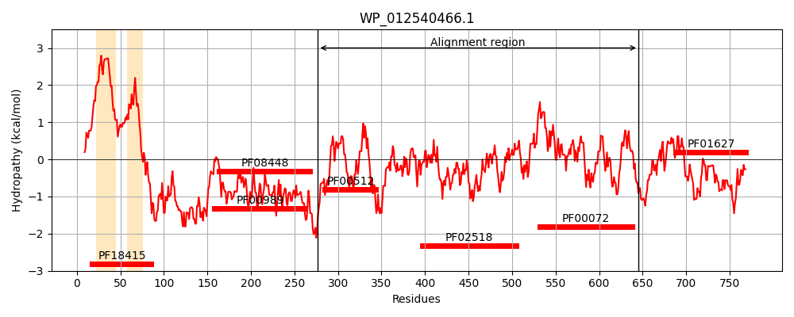
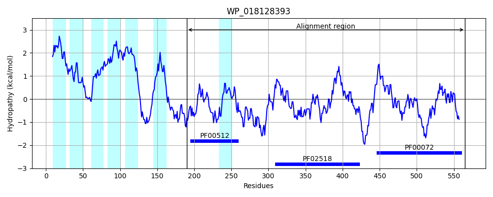
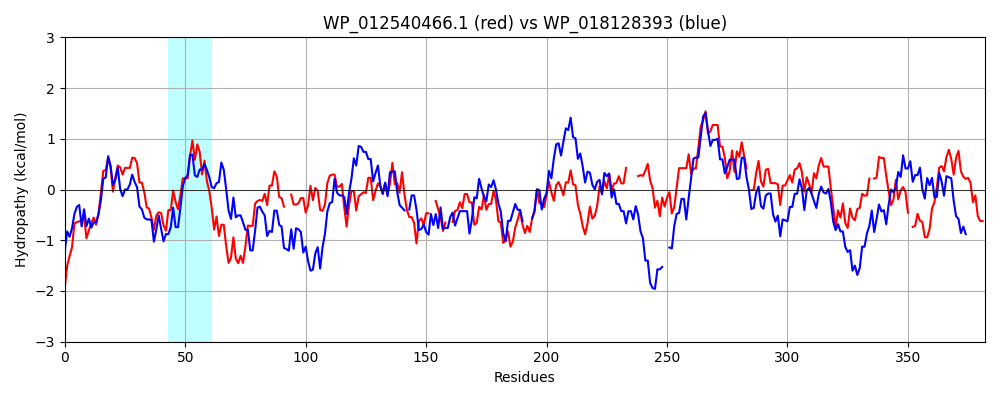

Hit Accession: WP_018128393
Hit TCID: 9.B.238.3.1
Hit Description: gnl|BL_ORD_ID|20890 gnl|TC-DB|WP_018128393.1|9.B.238.3.1 hybrid sensor histidine kinase/response regulator [Balneola vulgaris]
Mach Len: 382
e:0.000000
Query TMS Count : 2
Hit TMS Count: 7
TMS-Overlap Score: 0.000000
Predicted Substrates:None
BLAST Alignment:
Score: 553 , Bit scores: 217 bits, E-value: 8.9e-62, Alignment length: 382, Percentage identity: 35
Query: 277 ERASRDKTTFISTISHELRTPLNGIVGLSRILLDTELTSEQEKYLKTIHVSAVTLGNIFNDIIDMDKMERRKVQLDNQPVDFTSFLADLENL--SGLQAQQKGLRFVLEPSLPLPHKVITDGTRLRQILWNLISNAVKFTPQGGGVNVRVRY--DEGDI--LHFEVEDSGIGIPEAEQDKIFAMYYQVKDSHGGKPATGTGIGLAVSRRLARNMGGDISVTSQPGKGATFTLTV----HAPAIAEEVEDTLAEDDMPLPALNVLLVEDIELNVIVARSVLEKLG-NSVDVAMTGKAALEMFEPGEYDLVLLDIQLPDMTGLDISRQLKQNFAADE-LPPLVALTANVLKNK-KEYLDAGMDDVLSKPLSVPALTAMIKKFWD 645
E A K+ F++TISHE+RTPLNGIVG++ +L +T L+ EQ + + + S+ L ++ D++D +E RK+ L N + L +L ++ + ++ K + E +P VI D TRLRQIL NL++NAVKFT + G ++++ R+ +E DI + F +EDSGIGI E ++ +F +++ K + GTG+GLA+ R L M G I V S+ G+G+TFT+ + + +EV+D +D L +L+ ED+ +N +V + +LE L V++ G+ A+E YD VL+DIQ+P + G+D S ++ + +A E P ++A+TANV+K+ Y + G+ D +KPL+ + ++ K+ D
Sbjct: 190 EAADDTKSQFLATISHEMRTPLNGIVGITELLEETNLSDEQRELVTNLAYSSNMLNSLIGDVLDYTLLEDRKLVLQNNEIHIQKELKNLVDMFKPKIDSKNKRIELKFEYDSEIPEIVIGDVTRLRQILVNLVNNAVKFTNE-GYIHIKTRFIAEEEDIQRVRFTIEDSGIGISEQDKALLFTKFFRAKTN---DKVEGTGLGLAICRGLIDLMNGAIYVDSKLGEGSTFTIEIPFRAYEDKSVQEVKD--HKDKECFAGLKILIAEDVLVNQLVLKKMLEHLSVTDVEIVDNGEDAVERAISDNYDFVLMDIQMPKLDGMDASEKITEYYADKEHKPKIIAVTANVMKSDLARYAEVGIIDAATKPLNTQMIRDLLSKYRD 565 | Protein Hydropathy Plots: |
|---|
|  |  |
Pairwise Alignment-Hydropathy Plot:
|
|---|
|  |